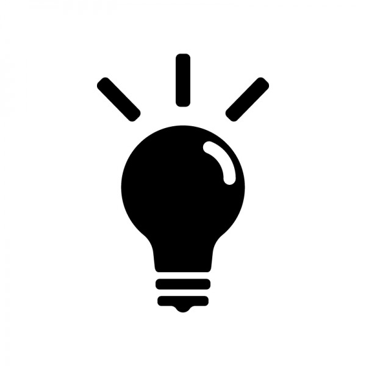

夏休みは制作案を考えるまでしか行きませんでした、、、いい物を作ろうとするとこんなに時間がかかるなんて。そして色々考えた結果...
エナジーハーベスト×IoT
エナジーハーベスト・・・身の回りで発せられる微量なエネルギーを電力に変換して活用すること。具体例は、太陽光、振動、体温など色々。体温とかから電力ってなんか不思議な感じもしますね。。。
今回作ろうとしているものをざっくり言うと、、、このように、太陽光を使ってそのエネルギーで何かを動かすことになりました！だから私が作らなければならないモノは太陽光を集めて電力に変換する仕組みと、その仕組みを使って何を動かすかの部分！！！（インテリアとして落とし込む）
とりあえず先生に回路を組んでもらい、太陽電池（ソーラーパネル）を使って充電できるかを試してもらいました！そしてそのわずかなエネルギーでLED電球がつきました！(嬉)
そして太陽電池部分の形を考えていたところ一番コンパクトに収まる形はこうなりました！でも何かしっくりこないしつまらない。。。いかにコンパクトかを目指してたけど、実際に形に出してみて、これでいいのだろうかとずっと悩み続けてた。。。実際にソーラー充電器って既存してるしなあ。と思った。

「今実際にあるソーラー充電器で充電したくなるか」
エナジーハーベストかもしれないけど普通のソーラー（自然）発電、って感じがするし、充電する時間が短縮されるわけでもなければ、わざわざ日光に当たるところに置かなければならないことを考えると、身の回りで起こる様々なエネルギーを電力に変換するというコンセプトとしては弱いのでは？わざわざ光を集めるっていう行動が邪魔な気がする！！
最終提案見直し!!
作品コンセプト：部屋の中で発せられる様々な”灯り（室内の電気をつけたり消したり/カーテンを開けたり閉めたり等の普段の生活をしている上で起こる光を伴う現象から得られるモノ）”を電力に変換する！！灯りを伴うすべてのルーティーンから吸収する！
→ 電力を集めようと思って集めるのではなく、普通に生活していたら、気づけば電気がたまっていた！という新しいメンタルモデル？を作りたい。普通のソーラー充電器とは違うユーザーエクスペリエンスを作りたい。
そのためには形を工夫する必要があって、ソーラーパネルを多面体？で組み合わせるとか、ピラミッド型にするとか光が集まりやすくする形にする必要がある。イメージはこんな感じ？
※フリー画像かわからないので発表次第化します（泣）
ソーラー充電自体は認知度が高いけど、エナジーハーベストを取り入れた生活として普段のルーティーンの中から電気を集めてそれをインテリアとして落とし込んだヒトはいない気がする。だから例えあまり電気が得られないかもしれなくてもコンセプトとしては”未来の生活がこうなったらいいな”みたいな未開拓な部分でもあるのでこのコンセプトで電力集めたみたいなと。。。
そして、その集めた電力を何に使うか！
現状で成功しているのは最初に載せた小さなLED電球！
①LEDを使ったインテリア（絶対作りたいやつ）

②M5Stackでたまった電力を測定し、スマホに通知(IoT)（絶対作りたいやつ）
③ミニ扇風機orスピーカー
LEDやスピーカーはBluetoothモジュール売ってるから時間があったらIoT化できないかなあと考えている。現在充電部分の形を構想中
ArduinoとBluetoothモジュールでLEDを繋いでみた
Arduino RGB LED control using Bluetooth
Bluetooth ミュージックレシバー